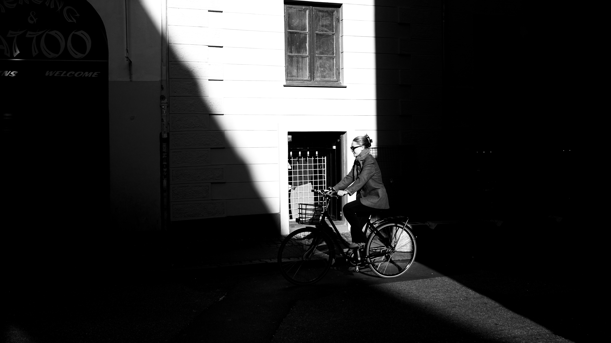
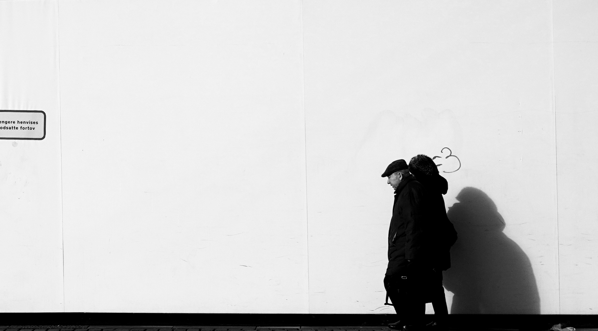

For the best experience, please view on a desktop.
Continue anyway
Arya Winarto
Street | Landscape | Architecture

Streets of
Copenhagen
Project Copenhagen 001

Amsterdam
Centraal
Eindhoven en Delft 002